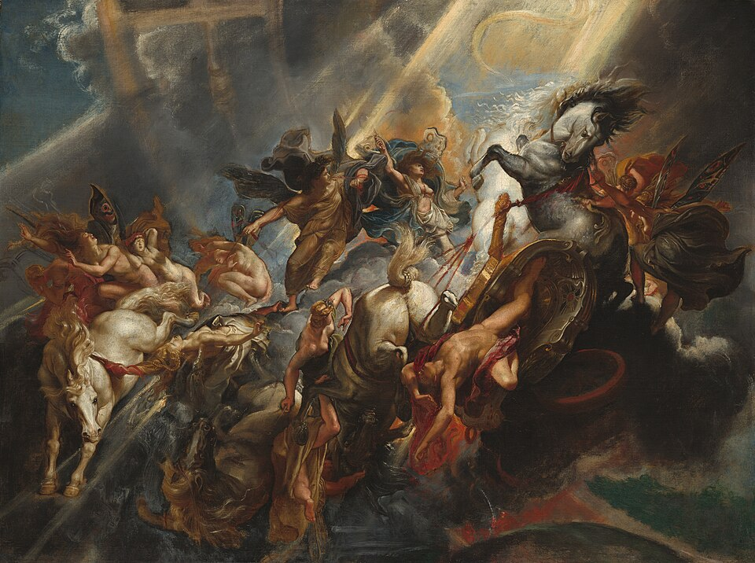
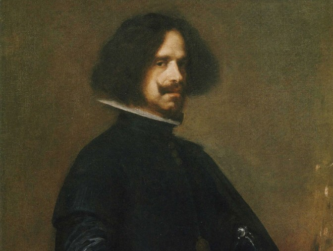
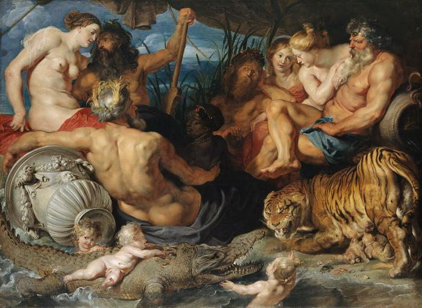

A Barokk korzsak történelme:

Több információért kattintson ideA barokk szó eredete vitatott; nemzetközi elterjedésének forrása a francia baroque (= „excentrikus”, „bizarr”), de a szót egyesek a portugál barocco (= „szabálytalan”, „ferdén kerek”), mások az olasz barocco (a szillogizmus egyik különleges alakzata) alakból származtatják.
A Barokk koraszak neves festői és festményeik:

Több információért kattintson ide- Caravaggio (olasz):
- Peter Paul Rubens (flamand):
- Rembrandt van Rijn (holland):
- Diego Velázquez (spanyol):
- Johannes Vermeer (holland):
- Mányoki Ádám (magyar):
A Barokk festészet jellemzői:

Több információért kattintson ide- Főbb jellemzők:
- Főbb témák és műfajok:
- Technikai bravúrok, anyaghasználat:
- Rejtett szimbolika (Vanitas):